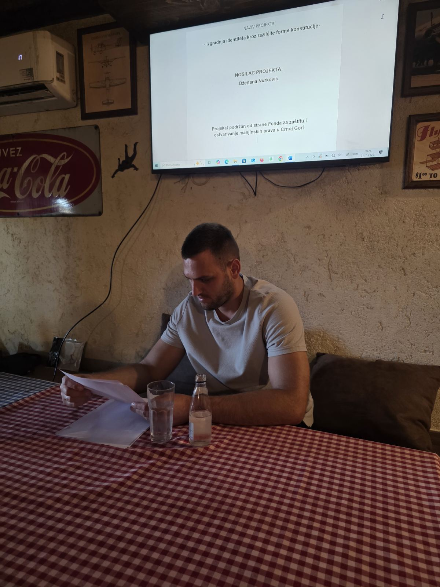
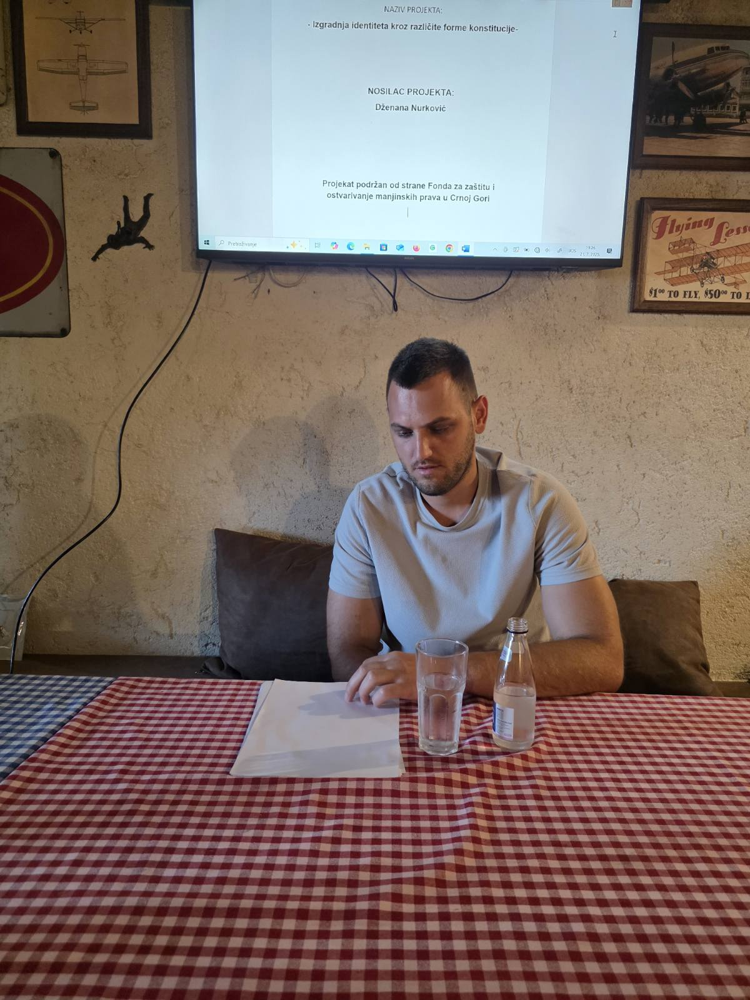
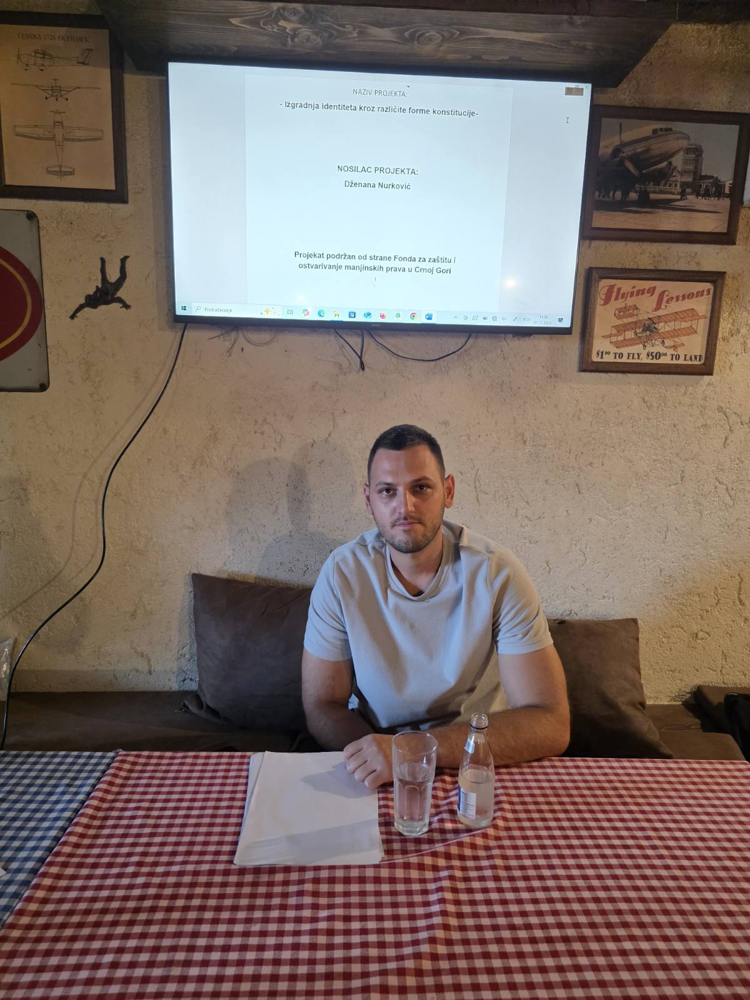

Interviju vodi: Dzenana Nurković
. Gospodine Metđonaj, šta za Vas lično predstavlja kulturni identitet i koliko je važan u oblikovanju Vaše ličnosti?
Enis Metđonaj:
Kulturni identitet za mene predstavlja srž onoga što jesam – to je skup vrijednosti, običaja, jezika i iskustava koji me određuju i povezuju s mojom zajednicom. On mi daje osjećaj kontinuiteta, pripadnosti i ponosa. Kroz kulturu učimo šta je ispravno, kako se odnosimo prema drugima, kako poštujemo tradiciju, ali i kako čuvamo slobodu izražavanja. Kulturni identitet je ono što nosimo sa sobom gdje god da idemo – čak i kad fizički napustimo svoj kraj, on ostaje u jeziku kojim mislimo, u gestovima, muzici koju slušamo i u načinu na koji gledamo svijet. Za mene, to nije samo naslijeđe, to je i odgovornost.
Na koji način albanski jezik odražava Vaš kulturni, porodični i regionalni identitet u okviru crnogorskog društva?
Enis Metđonaj:
Albanski jezik me povezuje sa kulturom moga naroda, ali i sa porodicom i krajem iz kojeg potičem. U mojoj porodici se albanski govorio svakodnevno – kod kuće, na okupljanjima, u pričama koje su prenošene s koljena na koljeno. U albanskom jeziku je sačuvana posebna osjećajnost, izraz poštovanja prema starijima, bogatstvo narodne mudrosti, kao i karakterističan humor. U kontekstu Crne Gore, gdje živimo sa različitim narodima i jezicima, albanski je dio te šire slike i doprinosi raznolikosti. Kroz svoj jezik ja ne gubim vezu sa svojim identitetom, već ga potvrđujem i doprinosim bogatstvu zajedničkog društva.
Koji su to elementi kulture koji su najviše uticali na Vaš kulturni identitet dok ste odrastali?
Enis Metđonaj:
Kultura u kojoj sam odrastao nije bila nešto apstraktno ili formalno – to je bio moj svakodnevni život. Najveći uticaj na moj kulturni identitet imala je porodica, prije svega. U kući su se govorile određene fraze, koristile poslovice, pjevale narodne pjesme koje su se prenosile sa generacije na generaciju. Moj otac i djed su pričali priče koje nisu bile samo zabavne, već su bile pune životnih pouka, morala, poštovanja i mudrosti. To su lekcije koje ne učiš iz udžbenika, već iz života.
Takođe, običaji vezani za praznike, vjenčanja, rođenja djece – ti trenuci su nosili u sebi simboliku koja oblikuje vrijednosni sistem čovjeka. Naučio sam da poštujem starije, da se gost ne dočekuje bez osmijeha, da zajednički objed ima posebno značenje. Iako tada nisam razmišljao o tome kao o "kulturi", sada shvatam da su to bile osnove mog identiteta.
Pored toga, važnu ulogu imala je lokalna zajednica. Učestvovao sam u školskim priredbama, gledao lokalne pozorišne predstave, a posebno su mi ostale u sjećanju folklorne sekcije i recitatorska takmičenja gdje smo recitovali stihove domaćih pjesnika. Bilo je to vrijeme kad si kroz igru i zajedništvo učio ko si, i šta te razlikuje, ali i povezuje s drugima. Sve to mi je pomoglo da izgradim osjećaj ponosa prema kulturi kojoj pripadam.
Kako, po Vašem mišljenju, jezik i književnost doprinose očuvanju kulturnog identiteta?
Enis Metđonaj:
Jezik i književnost su, po mom mišljenju, stubovi svakog kulturnog identiteta. Kroz jezik mi ne izražavamo samo informacije – već emocije, nijanse misli, način razmišljanja, čak i vrijednosne stavove. Maternji jezik je poput unutrašnjeg kompasa – njime se čovjek najpreciznije izražava. Kada govorim albanski, osjećam dublju povezanost sa svojim porijeklom, osjećam ritam govora koji je oblikovan mojim krajem, lokalnim izrazima, čak i šalama koje ne bi imale isti smisao na drugom jeziku.
Književnost ide još dalje – ona ne samo da čuva jezik, već ga oplemenjuje. Kroz književnost saznajemo kako su naši preci razmišljali, čime su se divili, čega su se bojali, o čemu su sanjali. Čitajući albanske pisce, bilo tradicionalne, bilo savremene, pronalazim dijelove sebe. A kada književnost dolazi iz sredine u kojoj živite – to postaje ogledalo kolektivne svijesti jednog naroda. I ona ima moć da nas okuplja, da nas podsjeti na ono što nas čini posebnima, ali i da nas otvori prema univerzalnim vrijednostima.
Posebno je važno da se književnost njeguje u obrazovanju. Djeca i mladi treba da imaju priliku da čitaju djela na svom jeziku, da u njima prepoznaju svoju svakodnevicu, svoje ljude i svoje krajeve. Jer ako izgube kontakt s književnošću svog naroda, vremenom će izgubiti i osjećaj pripadnosti. Jezik bez književnosti je kao tijelo bez duše – funkcionalno, ali prazno.
Zato vjerujem da su i jezik i književnost ključni ne samo za očuvanje kulturnog identiteta, već i za njegov razvoj, jer oni omogućavaju da se identitet ne samo prenosi, već i nadograđuje sa svakom novom generacijom.
Kako gledate na odnos tradicije i savremenog života? Da li tradicija sputava ili može obogatiti moderni identitet?
Enis Metđonaj:
Mislim da pravi odgovor leži u ravnoteži. Tradicija ne treba da bude teret, već oslonac. Ne vjerujem u strogo držanje forme ako se izgubi suština, ali vjerujem da tradicija može biti most ka savremenosti, ako se prilagodi vremenu. Na primjer, običaji kao što su slavljenje porodičnih svečanosti, poštovanje komšijskih odnosa ili narodne nošnje – sve to može imati svoje mjesto i danas, ali kroz novi izraz. Mladi danas žele slobodu, ali ako im ponudimo savremeni jezik tradicije – kroz dizajn, muziku, umjetnost – oni će to prihvatiti. Dakle, tradicija nas ne sputava, ako je ne posmatramo kruto, već kao živo naslijeđe koje se može razvijati.
U kojoj mjeri kultura doprinosi osjećaju zajedništva i međusobnog poštovanja u jednoj multikulturalnoj sredini poput Crne Gore?
Enis Metđonaj:
Kultura je, po mom mišljenju, najjače sredstvo povezivanja u jednoj raznolikoj sredini. Crna Gora je mozaik naroda, jezika, religija – i upravo kultura omogućava da se upoznamo i razumijemo. Kada čujete pjesmu na drugom jeziku, vidite običaj koji ne poznajete, ali osjetite iskrenost – tada shvatite da nas mnogo više toga povezuje nego što nas dijeli. Kultura ne briše razlike, ali ih čini razumljivima. Ona nas uči empatiji. Ljudi koji poznaju svoju kulturu lakše poštuju i tuđu, jer znaju koliko vrijedi očuvati ono što je svoje. I zato smatram da kulturni identitet ne treba da nas zatvara – naprotiv, on treba da nas otvori prema drugima.
Šta mislite o ulozi umjetnosti u izražavanju kulturnog identiteta?
Enis Metđonaj:
Umjetnost je najiskreniji i najuniverzalniji izraz kulture. Kroz muziku, slikarstvo, film, književnost – mi pričamo priče koje možda ne znamo reći običnim riječima. Umjetnost premošćuje granice jezika i nacija. Na primjer, tradicionalna albanska muzika, narodna igra ili moderna interpretacija folklora mogu govoriti mnogo o našem identitetu čak i onima koji ne znaju naš jezik. Mladi kroz umjetnost izražavaju ono što osjećaju, ono što ih boli ili raduje, i tako obnavljaju kulturu. Kulturni identitet nije samo ono što se nasljeđuje – to je i ono što se stvara. Umjetnost ima moć da sačuva, ali i da inspiriše novu dimenziju identiteta.
Da li mislite da se kulturni identitet može izgubiti ili zaboraviti? I šta bi, po Vašem mišljenju, bilo najvažnije da se sačuva?
Enis Metđonaj:
Kulturni identitet se može potisnuti ako ga ne njegujemo. Ako prestanemo govoriti svojim jezikom, slaviti običaje, učiti djecu narodnim pjesmama ili pričama – s vremenom, te stvari iščezavaju. Ne odmah, ali tiho. Međutim, nije kasno. Identitet se može i obnoviti – kroz obrazovanje, kulturu, lokalne inicijative. Najvažnije što treba sačuvati su jezik i međuljudske vrijednosti – poštovanje, solidarnost, mudrost predaka. Ako to ostane, ostaje i duh kulture. Sve ostalo – forma, moda, detalji – to se mijenja, ali suština mora opstati.
Šta biste poručili mladima kada je riječ o njihovoj kulturnoj pripadnosti i njenom značaju u savremenom društvu?
Enis Metđonaj:
Poručio bih im da budu ponosni na svoju kulturu, ali da budu i znatiželjni. Kulturni identitet nije nešto staromodno – on je resurs, bogatstvo, izvor inspiracije. Mladi treba da istražuju svoje korijene, da pitaju roditelje i djedove, da uče jezik, da posjećuju lokalne manifestacije, da stvaraju novu kulturu koja će imati i tradiciju i savremenost. Svako društvo koje zna odakle dolazi, zna i kuda ide. I zato, bez obzira da li ste umjetnik, student, zanatlija ili preduzetnik – vaša kultura je vaš temelj. Ako je njegujete, imaćete sigurnost da budete i svoji i otvoreni za svijet.



foto: Dzenana Nurković
← Nazad na početnu stranu